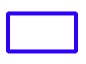
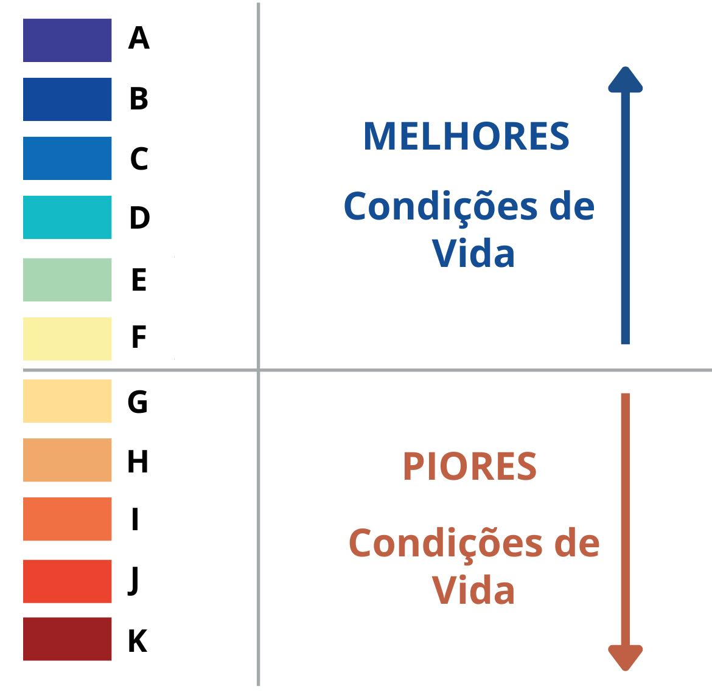

Legenda
| ORGANIZAÇÕES SOLIDÁRIAS DE EMERGÊNCIA (RS): | |

|
Organizações Solidárias de Emergência (RS) |
| Total de Organizações Solidárias de Emergência (RS): 80 registros | |
| OBRAS DO PAC: | |
| PAC: Obras de Urbanização - 88 registros | |
| PAC: Obras de Encosta - 38 registros | |
| Total de Obras do PAC: 123 registros | |
| PLANO MUNICIPAL DE REDUÇÃO DE RISCOS: | |
|  Em Andamento | |
| Não Iniciado | |
| Total: 19 registros | |
| CARAVANA DAS PERIFERIAS: | |
| Caravana das Periferias - 2023 - 89 registros | Caravana das Periferias - 2024 - 12 registros |
| PRÊMIO PERIFERIA VIVA 2023: | |
| Acesso à Justiça e Combate às Desigualdades - 103 registros | |
| Planejamento Urbano, Gestão de Riscos e Responsabilidade Climática - 84 registros | |
| Comunicação, Inclusão Digital e Educação Popular - 221 registros | |
| Cultura e Memória - 612 registros | |
| Saúde Integral e Dignidade Humana - 88 registros | |
| Soberania Alimentar e Nutricional - 98 registros | |

|
Economia Solidária - 118 registros |
| Total: 1324 registros | |
| Total de Ações Premiadas: 54 registros | |
| INICIATIVAS PERIFÉRICAS CADASTRADAS: | |
| Acesso à Justiça e Combate às Desigualdades - 77 registros | |
| Planejamento Urbano, Gestão de Riscos e Responsabilidade Climática - 67 registros | |
| Comunicação, Inclusão Digital e Educação Popular - 90 registros | |
| Cultura e Memória - 143 registros | |
| Saúde Integral e Dignidade Humana - 26 registros | |
| Soberania Alimentar e Nutricional - 50 registros | |
| Economia Solidária - 33 registros | |
| Total: 486 registros | |
FAVELAS E COMUNIDADES URBANAS (IBGE):
Perímetro
Perímetro
Total de Domicílios por Classe

TIPOLOGIA INTRAURBANA (IBGE):

Pesquisar
Pesquise no Mapa!
Aqui você pode procurar informações sobre iniciativas cadastradas, buscando por municipio ou nome da iniciativa.
{{ searchMessage }}
(mínimo de 4 dígitos)
(mínimo de 4 dígitos)

Municípios
- {{ item.nome }} - {{ item.uf }}
Prêmio Periferia Viva
- {{ formatIniciativa(item.organizacao) }} - {{ item.municipio_cadastro }} - {{item.uf }}
Iniciativas Periféricas
- {{ formatIniciativa(item.organizacao) }} - {{ item.municipio_cadastro }} - {{item.uf }}